" Liminal "（リミナル）はラテン語の " Limen "に由来する。
二つの状態の中間を意味し、どっちつかずの時間の中で
自分が何者なのか、どこにいるのかはっきりわからなくなることから
「Liminal Space」（リミナルスペース）の概念が拡張した。
リミナルスペースは日常の至る所に存在している。
乗客のいない地下鉄、人気のない通り、がらんとした駐車場。
普段人が行き交い、賑わう場所から人の存在を取り除いた瞬間、
それら全てがリミナルスペースである。
" 一見無害なリミナルスペースを見て
どのようなストーリーを作り出すことができるのか "
このような問いから生まれたのが
「The Backrooms」（バックルーム）だ。
匿名掲示板4chanに貼られた一枚の画像から
概念が生まれ、これをコンセプトとして構築された世界が
現在、バックルームとして広く知られているコンテンツである。
The Backrooms JP← Click!
うっかりして、間違った場所からノークリップ[壁抜け]
してしまうと、バックルームに迷い込むことになる。
古い湿ったカーペットの悪臭、
狂気じみた一面の黄色、
蛍光灯が唸り続ける終わりのない背景音だけの、
6億平方マイルに及ぶ無作為に区切られた無人空間に
あなたは閉じ込められてしまったのだ。
もし近くで何かがうろついている音を聞いてしまったら、
神に祈るしかない。そいつは間違いなく、
あなたの存在に気づいているのだから。
0から999のレベルがあり、各階層に設定と画像が存在する。
その各階層のイメージ画像に「リミナルスペース」が選ばれたことで
リミナルスペースは単なる美学的現象だけでなく
恐怖の要素も纏うようになったといえるだろう。
このようにして構築された世界「The Backrooms」を
モチーフとして取り入れた作品は数多ある。
今回はその中の一つであり、私の好きなゲームでもある
「Escape the Backrooms」に登場する階層の一部を紹介し、
「The Backrooms」の世界を体験してもらいたいと思う。
現実の枠から外れた奇妙な異世界
「The Backrooms」へようこそ
◀︎ Choose level ! ▶︎
「The Backrooms」の世界はお楽しみいただけただろうか。
先ほどリミナルスペースは日常の至る所に存在していると述べた。
今から、日常に存在するリミナルスペースを探しに行こう。
持つべきものはカメラと調査意欲だけだ。
身近な場所で発見されたリミナルスペースをいくつか掲載する。
見慣れた場所の見慣れぬ姿をぜひ楽しんでほしい。
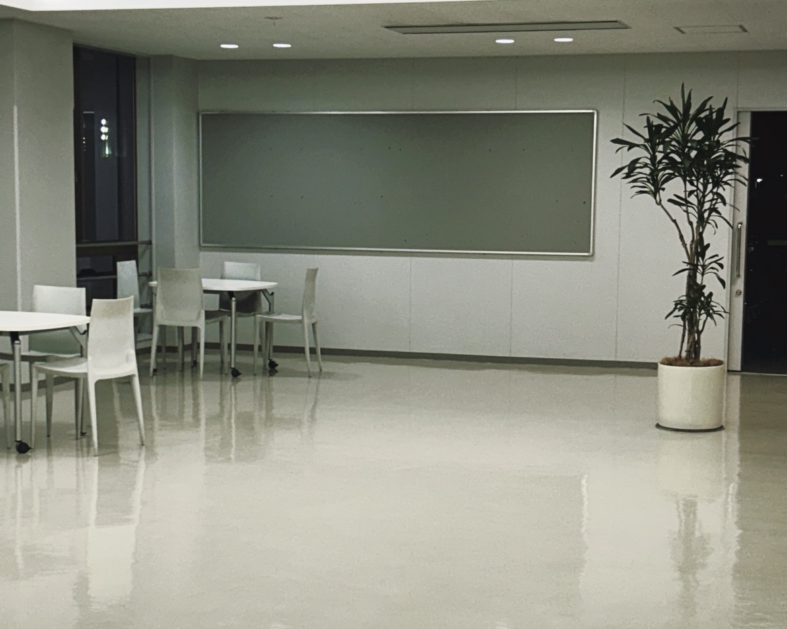
そこには誰かの気配だけが残っている。
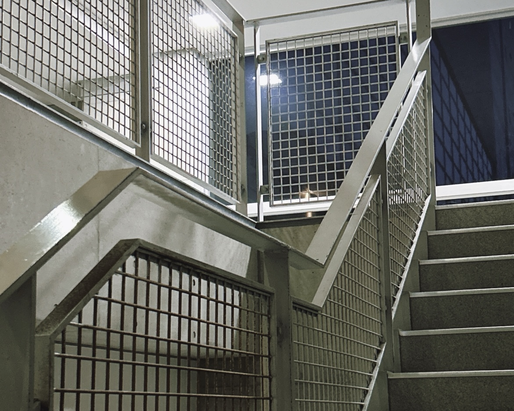
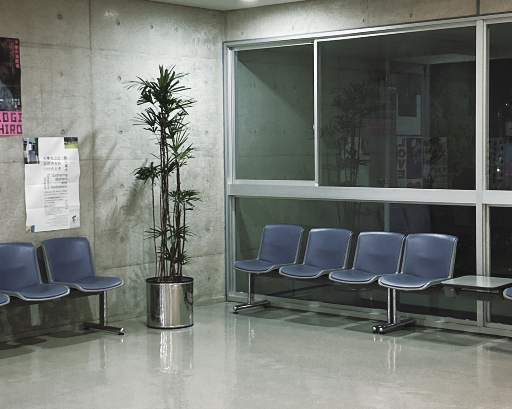
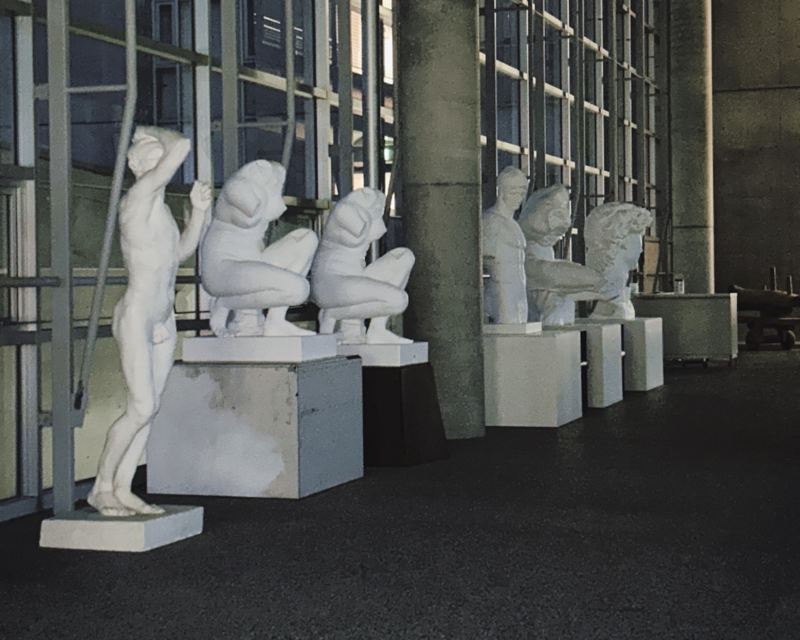
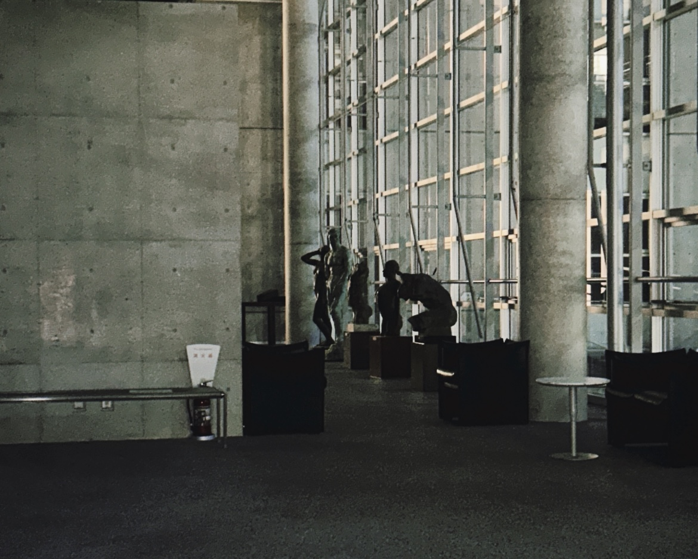
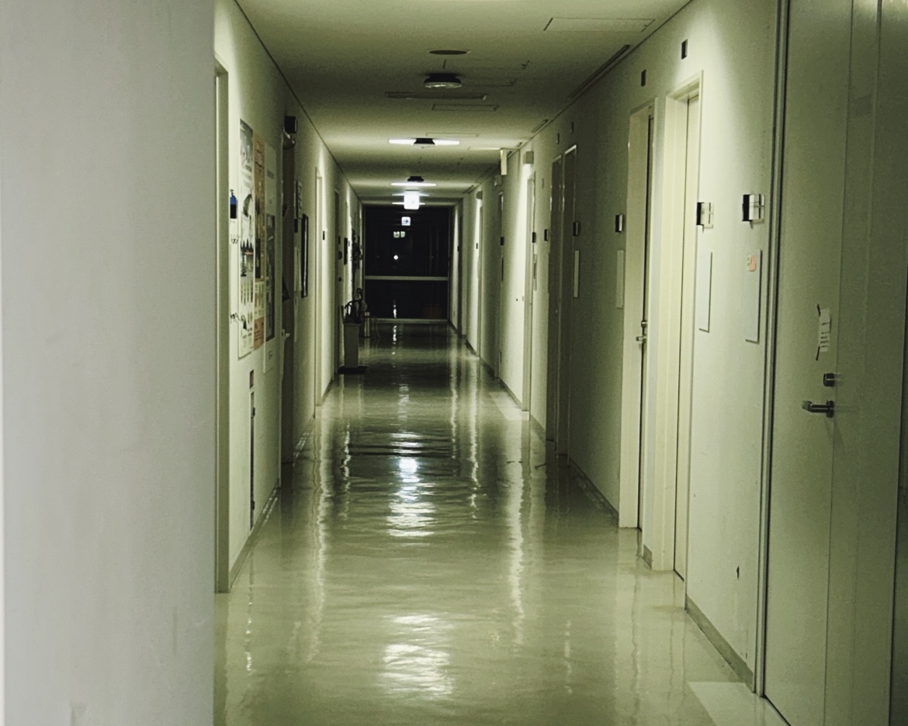
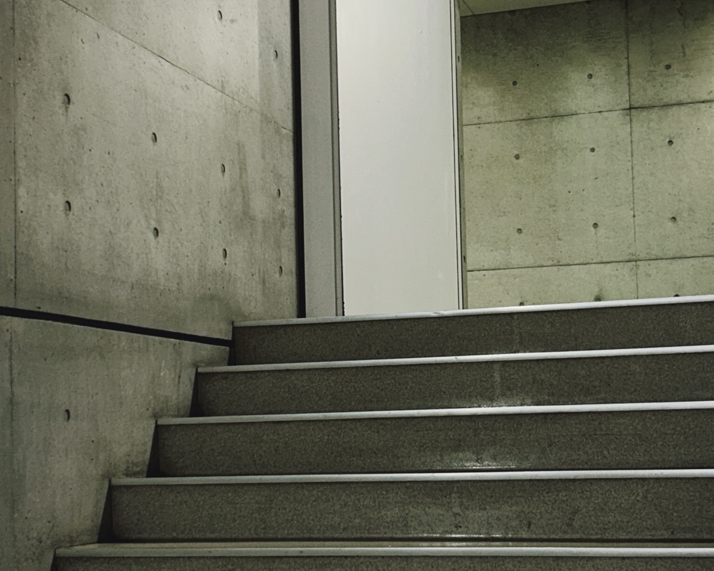
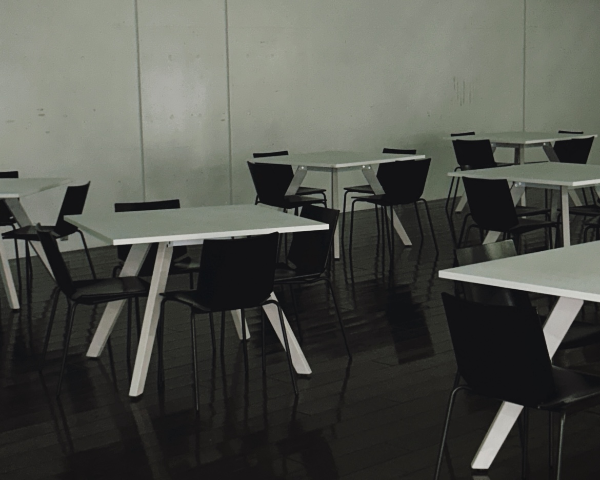
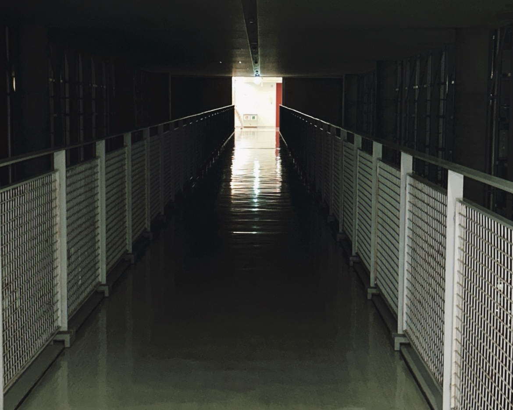
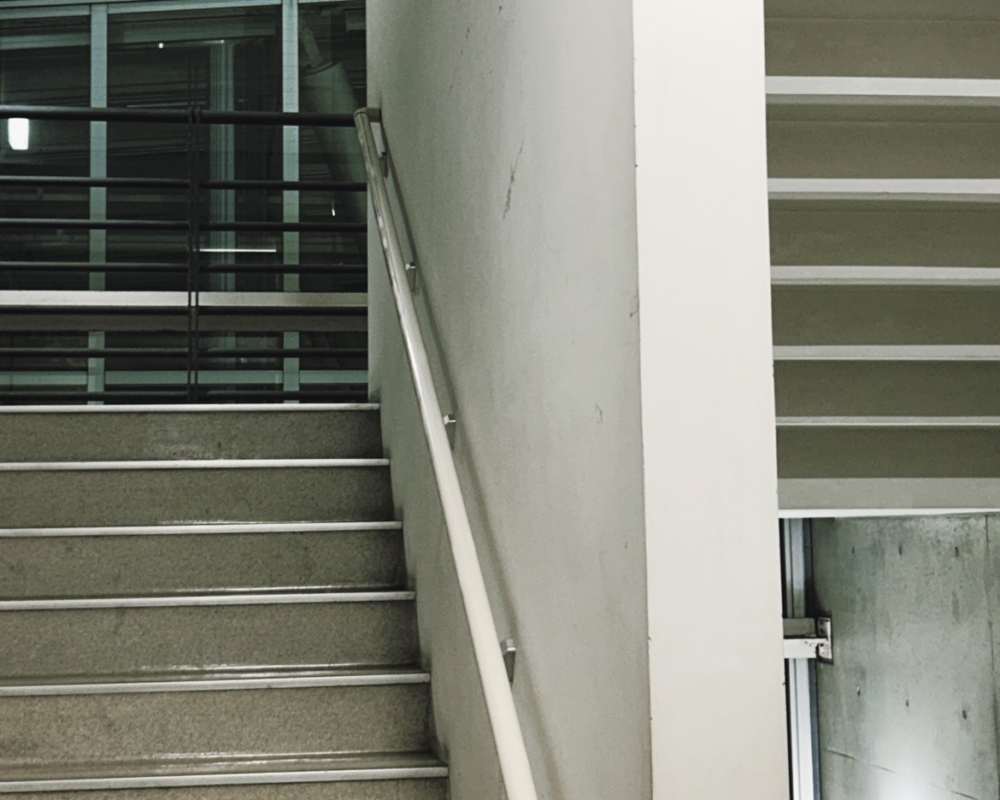
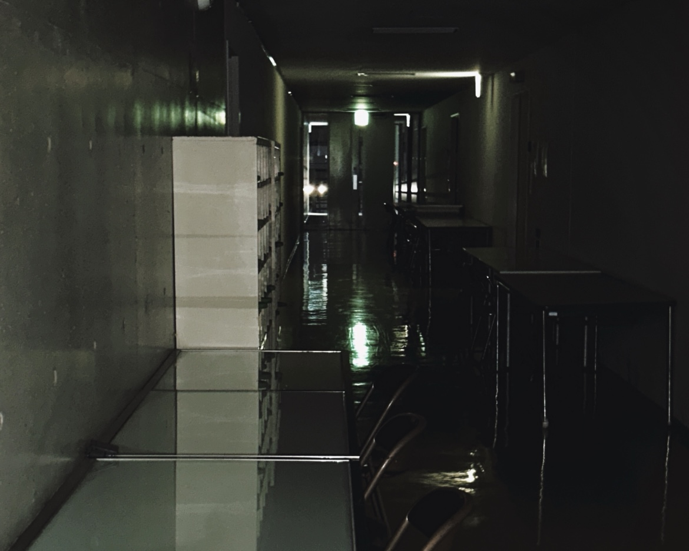
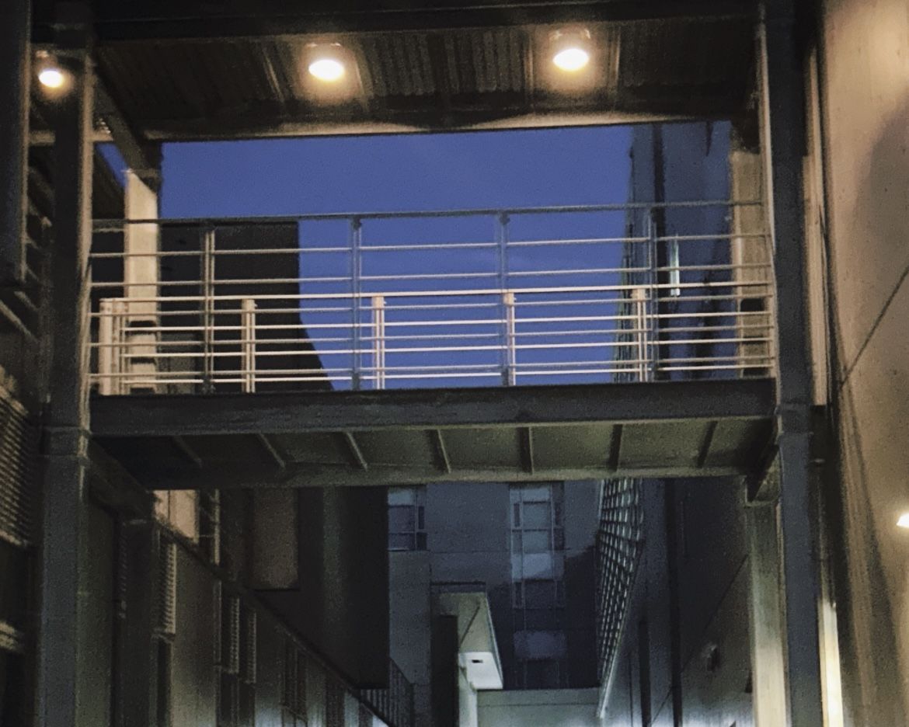